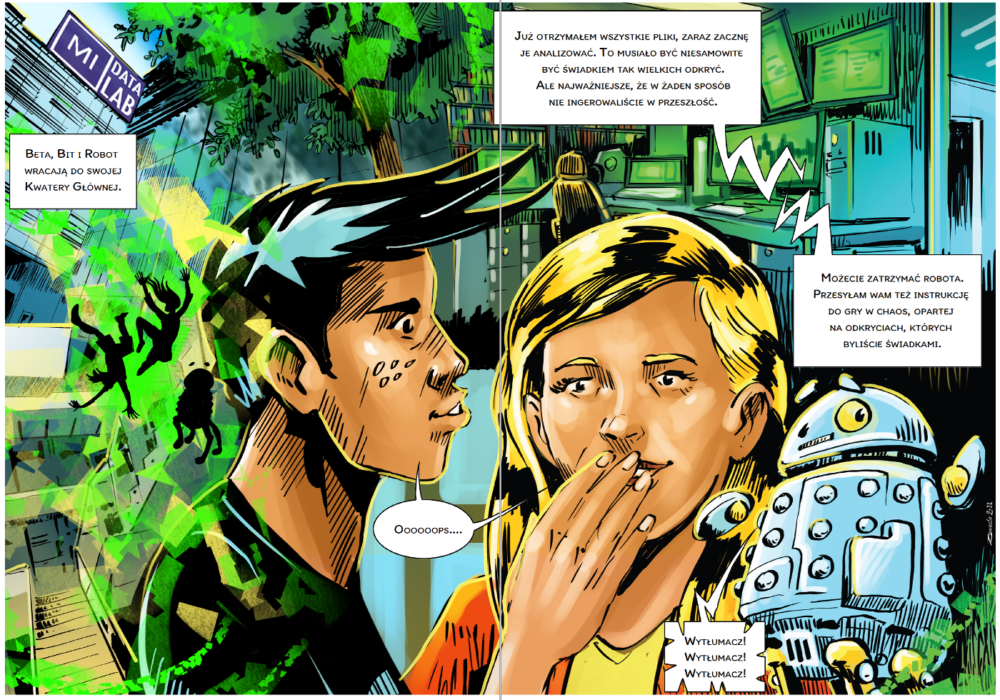

4.1 Story

Beta i Bit wracają do bazy
Beta i Bit wracają do bazy
http://www.algorytm.org/fraktale/system-funkcji-iterowanych-ifs.html
p1 = 0.3333
p2 = 0.3333
p3 = 0.3334
f1(0.5x + 0.0y - 0.5; 0.0x + 0.5y + 0.5)
f2(0.5x + 0.0y - 0.5; 0.0x + 0.5y - 0.5)
f3(0.5x + 0.0y + 0.5; 0.0x + 0.5y - 0.5)p1 = 0.895652
p2 = 0.052174
p3 = 0.052174
f1(0.787879x - 0.424242y + 1.758647; 0.242424x + 0.859848y + 1.408065)
f2(-0.121212x + 0.257576y - 6.721654; 0.151515x + 0.053030y + 1.377236)
f3(0.181818x - 0.136364y + 6.086107; 0.090909x + 0.181818y + 1.568035)p1 = 0.787473
p2 = 0.212527
f1(0.824074x + 0.281428y - 1.882290; -0.212346x + 0.864198y - 0.110607)
f2(0.088272x + 0.520988y + 0.785360; -0.463889x - 0.377778y + 8.095795)p1 = 0.01
p2 = 0.85
p3 = 0.07
p4 = 0.07
f1(0.0x + 0.0y + 0.0, 0.0x + 0.16y + 0.0)
f2(0.85x + 0.04y + 0.0; -0.04x + 0.85y + 1.6)
f3(0.2x - 0.26y + 0.0; 0.23x + 0.22y + 1.6)
f4(-0.15x + 0.28y + 0.0; 0.26x + 0.24y + 0.44)p1 = 0.1
p2 = 0.35
p3 = 0.35
p4 = 0.2
f1(0.14x + 0.01y - 1.31; 0.0x + 0.51y + 0.1)
f2(0.43x + 0.52y + 1.49; -0.45x + 0.5y - 0.75)
f3(0.45x - 0.49y - 1.62; 0.47x + 0.47y - 0.74)
f4(0.49x + 0.0y + 0.02; 0.0x + 0.51y + 1.62)p1 = 0.142
p2 = 0.142
p3 = 0.142
p4 = 0.142
p5 = 0.142
p6 = 0.142
p7 = 0.142
f1(0.05x + 0.0y - 0.06; 0.0x + 0.4y - 0.47)
f2(-0.05x + 0.0y - 0.06; 0.0x - 0.4y - 0.47)
f3(0.03x - 0.14y - 0.16; 0.0x + 0.26y -0.01)
f4(-0.03x + 0.14y - 0.16; 0.0x - 0.26y -0.01)
f5(0.56x + 0.44y + 0.3; -0.37x + 0.51y + 0.15)
f6(0.19x + 0.07y - 0.2; -0.1x + 0.15y + 0.28)
f7(-0.33x - 0.34y - 0.54; -0.33x + 0.34y + 0.39)